Here are descriptions of some of the more interesting or significant changes made to the Plug-in Development Environment (PDE) for the Mars (4.5) release of Eclipse. They are grouped into:
See also the Eclipse Platform What's New and JDT What's New documents.
We also recommend to read the Tips and Tricks.
Dialogs, Editors, and Views |
|
| Added wildcard support for selecting plug-ins |
Wildcard support and implicit prefix completion are now supported in all plug-in selection dialogs,
e.g. in the product editor or in the target definition.
Due to the implicit "*" at the beginning of the pattern, you can just type "platf" to find "org.eclipse.platform".
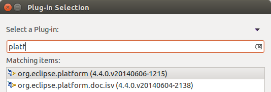 |
| Products can set default preference values |
In the Product Editor you can now use an Eclipse Preferences File ("*.epf") to
generate the default preference settings in the product's customization file.
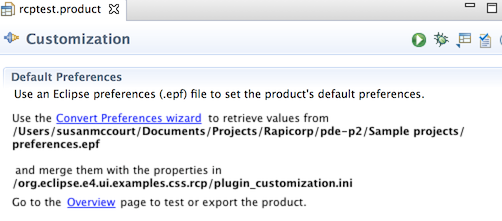 A wizard allows you to control which files to use for generating the preference defaults.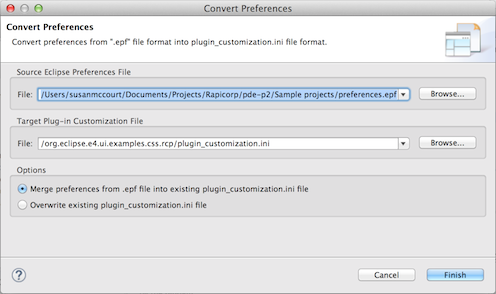 |
| Products can specify CSS file |
In the Product Editor, on the Customization tab, you can now
specify the name of a CSS file to be used to style the product.
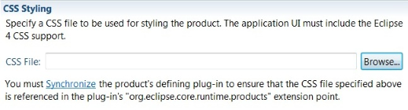 |
| Category editor can specify additional update repositories |
In the Category Manifest Editor you can now specify additional update repositories that should be
referenced by the generated update repository. These additional repositories will be searched for
content whenever the generated repository receives a request for content.
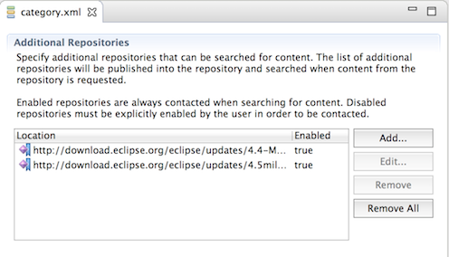 |
| Category editor can define download statistics |
In the Category Manifest Editor you can now specify a download statistics server that should
be used to collect download statistics about your product. You can also specify which features and/or
bundles should be used to collect download information.
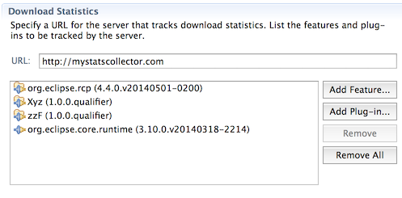 |
| "Reload" button in target editor |
In the Target Editor, on the Locations section, there is now a Reload button that clears the cached
p2 profile and then resolves the target. This button is helpful in scenarios where the target editor is left in inconsistent
state due to issues like unstable network connection.
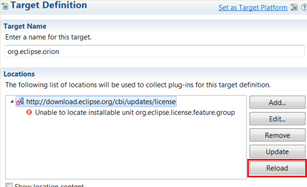 |
| Option to set maximum log size |
In the Error Log view, on the view menu > Filters... dialog, there now is an option to set
the maximum log size that can be read by the Error Log view. If the size of the error log exceeds
this limit, a warning is logged.
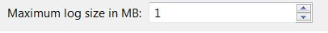 |
Wizards |
|
| Create an E4 project from "New Plug-in" wizard |
It is now possible to create an E4 project using the New Plug-in Project wizard.
Select This plug-ins will make contributions to the UI and create a rich client application:
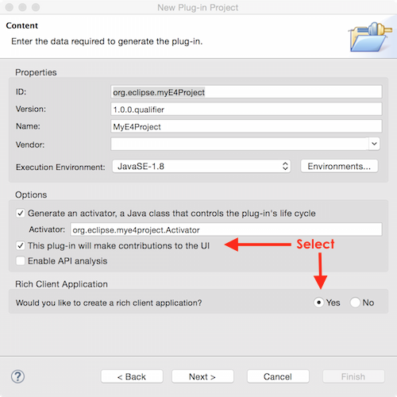 The next page will offer a template to create an E4 project: 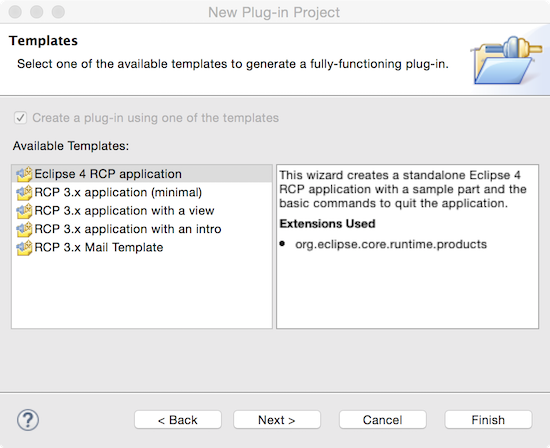 Then you can select to generate some sample content: 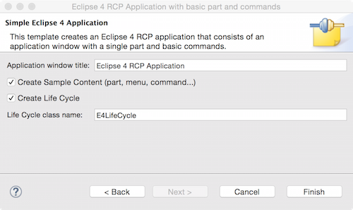 And you get your E4 project in your workspace: 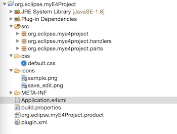 |
API Tools |
|
| Create an API baseline from a target definition | In the Plug-in Development > API Baselines preference page, an API baseline can now be created from an existing target definition. |
| API use scan report specifies additional filters used |
API use scan report specifies the location of additional filters (.api_filter files)
used during the scan. It also reports the number of illegal references filtered out due to
additional filters used.
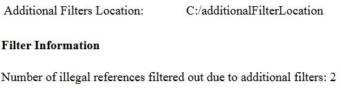 |